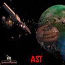

Forums galactiques > Assemblée Galactique : diplomatie officielle > Les Insoumis de la Galaxie
Pages : 1
| Mac Polar II Respect diplomatique : 224  26/11 ETU 09:21  | Score : 0 Détails Commandants, Camarades, Amis,
J?ai décidé aujourd?hui de faire à la veille des résultats du vote un bilan de cette fantastique aventure pour l?égalité que représente la naissance et le développement de l?AST. A sa naissance composée de 11 membres, l?AST a tout de suite rallié quelques commandants suffisamment motivés pour faire changer les choses. Les résultats sont là : on peut aujourd?hui parler de succès. Politiquement, Les petits commandants ont trouvé une tribune accessible au sein de notre coalition. Notre liste, composée essentiellement de commandants défavorisés, est là pour le rappeler. Malgré les espions qui limitent notre liberté d?expression, le forum interne est plus vivant que jamais. J?ai personnellement compté plus de 2000 messages depuis sa création. Economiquement, la redistribution des terres est un succès. Pour L?Armée des Sans-Terres, c?était un point cardinal. Notre RMI de 20 planètes est respecté. Tout commandant intégrant la coalition a ainsi reçu de quoi vivre. Par ailleurs, les trois profils ont pu enfin exercer convenablement leur métier, grâce aux outils (mécanoïdes, kamikazes, VME) mis à leur disposition. Les armées révolutionnaires sont entretenues et prêtes à l?action. Les subventions pour la science ont également profité aux Sans-Terres. Quelle conséquence ? Les camarades sont aujourd?hui pour la plupart très, très bien classés. Pour ceux qui en doutaient encore, le communisme permet l?expression pleine et donc la multiplication des capacités de chacun Diplomatiquement, la sagesse d?un maitre yoda nous a permis d?éviter un maximum les conflits armés, et de respecter ainsi la trêve. Seuls furent combattus les espions et leurs soutiens, à l?instar de Golstein et Ta Brioche. J?annonce en passant que la fin du fasciste qui chaque jour persécutait les petits commandants pour agrandir son territoire est proche. L?AST est aujourd?hui au deuxième tour des élections. Elle compte en son sein 35 membres bavards et engagés. Sa crédibilité et sa légitimité ne sont plus à démontrer. Malheureusement, beaucoup reste à faire, pour l?ensemble de la galaxie. L?ULG regroupe l?essentiel des Anciennes Elites, qui tentent à tout prix de maintenir leur emprise sur la galaxie. Ceux qui se déchiraient autrefois dans des guerres impérialistes sans fin sont aujourd?hui copains comme cochons pour défendre leurs intérêts. Ils prônent la liberté du commandant comme principe absolu. Leur liberté s?arrête la où commence celle des autres. Mais qui dessinera la frontière ? La collusion d?intérêt est trop évidente. La liberté sans l?égalité, comme le disait notre regretté redsamourai, ce n?est encore que la liberté du plus fort. Face à la menace de l?ULG, l?alternative du PPG n?est plus crédible. Poursuivi par ses déchirements internes, il peine à définir sa ligne politique. Entre corruption et censure, le PPG, parti d?un homme et non d?une idée, n?a pas d?avenir. A l?heure où la prise de conscience des commandants bute sur l?entêtement de plus en plus radical des Anciennes Elites, l?inactivité n?est pas acceptable. J?appelle donc tous les prolétaires de la galaxie à voter pour nous, à nous soutenir, à nous rejoindre. La lutte ne s?arrêtera jamais. Nous sommes les insoumis de la galaxie. Pour les Sans-Terres! Pour l?égalité! Pour l?émancipation! Mac Polar II | ||
| Ta Brioche Respect diplomatique : 27  26/11 ETU 09:24 | Score : 0 Détails Je serais assez interesse que vous parliez de votre politique a l egard de Charlemagne. Il semble que l AST "choisisse" les "fascistes" qu elle combat...
| ||
| AlphonseHubert Respect diplomatique : 690  26/11 ETU 12:19 | Score : 0 Détails L'AST ne souhaite pas s'engager dans des guerres inter-impérialistes.
Nous vous combattons car vous nous avez directement attaqué. | ||
| Loulou de Himmel Respect diplomatique : 15  26/11 ETU 15:04 | Score : 0 Détails **********Communique officiel de l'AST**********
Commandant Ta Brioche, Vous avez accuse a plusieurs reprises l'AST d'avoir signe une alliance avec l'Empire de Charlemagne. Cette alliance est un pur produit de votre cerveau malade. Pour des raisons ideologiques evidentes, l'AST ne peut s'allier et encore moins fusionner avec l'Empire. A titre d'exemple, 3 membres de la coalition ont ete contacte pour devenir comte (respectivement yoda, yersin et moi-meme) et ces 3 membres ont refuse. Nous entretenons neanmoins des rapports diplomatiques cordiaux, comme c'est le cas avec plusieurs autres coalitions. Les attaques a votre encontre, qu'elles soient le fait de Charlemagne ou de certains memebres de l'AST, ne sont que le resultats d'une outrageante politique de votre part. Concernant l'AST, vous etes l'un des plus fideles allies de notre ancien intendant, le denomme gOlstein. A ce titre, vous faites partie des ennemis de la coalition, statut dont vous vous vantez d'ailleurs a grands cris. Commandant Loulou de Himmel **********Fin du communique officiel*********** | ||
| Peter66 Respect diplomatique : 0  26/11 ETU 22:41 | Score : 0 Détails Les nouveaux commandants ne sont pas mise a l écart dans l AST bien au contraire elle m a soutenu et elle m a permit de me developer et de me défendre ainsi elle aide donc beaucoup les nouveaux commandants.
Comme l a dit Mac Polar II on a le sage maitre yoda qui préfère régler les conflit diplomatiquement que militairement et on a un forum qui pour ma par et organise de facon claire et précise permettant de si retrouver et de communiquer facilement. | ||
| l\'abbé ramouflon Respect diplomatique : 579  26/11 ETU 22:54 | Score : 0 Détails petite petite marionnette qui danse au bout de ses fils....
| ||
| ultremis_ Respect diplomatique : 36  27/11 ETU 01:50 | Score : 0 Détails Attention pinocchio ton nez a bougé !
|
Pages : 1
Forums galactiques > Assemblée Galactique : diplomatie officielle > Les Insoumis de la Galaxie